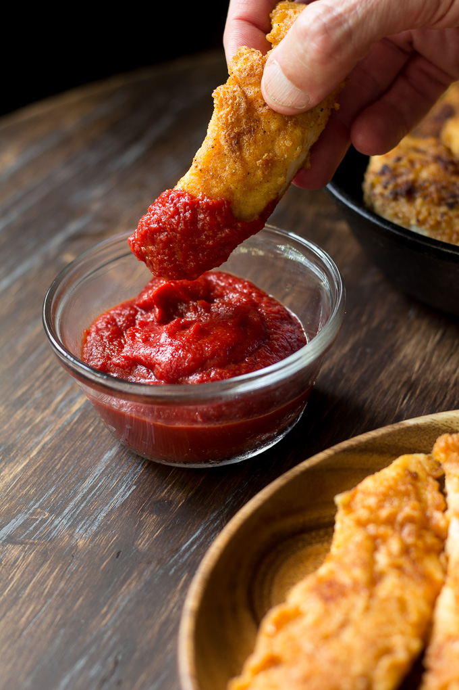

Crispy Paleo Chicken Tenders
Crispy Paleo Chicken Tenders that are Whole30 friendly and nut free, "breaded" with a savory mixture of cassava, coconut flour, and spices. Very kid friendly and totally grain free, dairy free, and sugar free! Great alone or with baked fries and your favorite dip!

INGREDIENTS
- 1.5 lbs chicken tenderloins organic, sliced evenly
- 1 egg whisked
- 3/4 cup Cassava flour*
- 1/4 cup Coconut flour*
- 2 tsp fine grain sea salt
- 1 tsp onion powder
- 1 tsp smoked paprika
- 1/4 tsp black pepper
- 1/4 cup plus up to 2 tbsp more of cooking fat - refined coconut oil light olive oil, or your preference
INSTRUCTIONS
- In a large bowl, combine the cassava flour, coconut flour, salt, and spices. In a small bowl, whisk your egg. For this recipe, you will be coating the chicken in the egg, then grain free flour/spice mixture, and then pan frying.
- Heat a large, heavy skillet over medium-high heat and add your cooking fat of choice**
- Test the oil by dropping in a tiny bit of the breading to see if it sizzles. Adjust your heat accordingly.
- Begin to dredge each chicken tenderloin in the whisked egg, followed by the flour mixture. Shake off excess and add to the skillet, repeat until the skillet is filled up
- Cook on one side until golden brown and crisp, then carefully turn each one over to cook the second side. Add up to 2 tbsp more cooking fat if necessary, and adjust the heat either up or down for even browning.